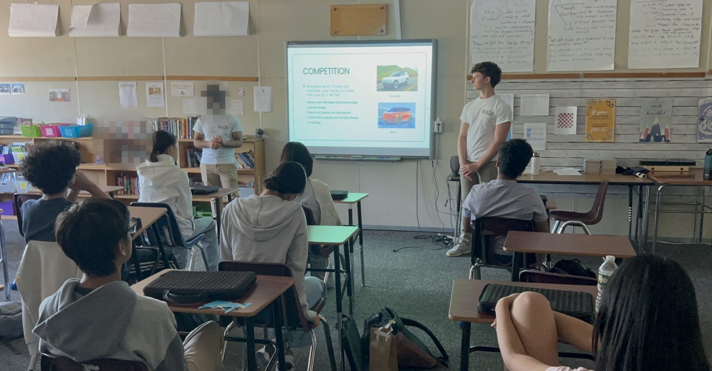
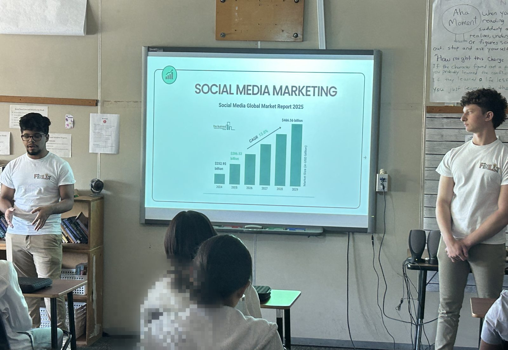

Futures Financials
Research

Teaching at this scale produces data.
We use it to argue for better financial education policy, and to publish what we learn.
Research
Published Papers
-
October 2026 AI Exposure, Wages, and Employment: Augmentation vs. Substitution in the Labor Market FinMango Ambassador Notes Hans Patel (Co-CEO) · October 8, 2026
If AI is supposed to replace workers, why are the industries using the most AI seeing higher productivity, employment and wages?
See full paper → -
July 2026 The Biggest Financial Literacy Gap Isn’t What I Expected FinMango Ambassador Notes Aren Inan (CFO) · July 19, 2026
Teaching students and helping run a statewide readiness audit changed how he thinks about preparing young people for adulthood.
See full paper → -
June 2026 Swiftonomics: The Impact of Taylor Swift’s Eras Tour Journal of Future Economists Hans Patel (Co-CEO), co-author · June 25, 2026
A Fed Challenge team traces how the Eras Tour moved real money through the U.S. economy, using elasticity, derived demand and consumer surplus to explain the scale of it.
See full paper → -
June 2025 Tone, Timing, and Turmoil: How FOMC Statements Affected the Stock Market During the COVID-19 Pandemic European Journal of Economic and Financial Research Danny Jang (Founder/Board Director) · June 18, 2025
Scores the tone of Federal Reserve statements against short-term market moves and finds that how closely that tone matched economic conditions shaped how investors reacted.
See full paper → -
May 2025 Empowering Students Through Financial Literacy: An Evaluation of NGPF’s High School Curriculum Journal of Personal Finance Danny Jang (Founder/Board Director), with Anand R. Marri · May 12, 2025
An eight-week program with 24 students raised the average score from 15.79 to 19.73, with gains across every performance level, not just the strongest students.
See full paper →
Working Papers
-
October 2026 Beyond the Mandate: Why High School Financial Literacy Requirements Are Necessary but Not Sufficient Student Researcher · October 30, 2026
Thirty states now require a personal finance course, but this paper argues the mandate is the easy part: teacher preparation, curriculum quality and accountability decide whether it changes anything.
See full paper → -
September 2026 Who Keeps the Aid? Targeting Aid to Control College Costs Student Researcher · September 2026
Asks who actually ends up with federal college aid, and argues it works best when targeted at the lowest-income students, where colleges have the least room to absorb it.
See full paper → -
June 2026 Categorizing Consumer Grievances in Buy Now, Pay Later Services AP Research Student Researcher · June 2026
Runs topic modeling over 5,000+ complaints filed with the Consumer Financial Protection Bureau and finds that what BNPL users actually complain about does not match what the research has been studying.
See full paper → -
March 2026 The Berkeley Economic Review High School Essay Contest Berkeley Economic Review Hans Patel (Co-CEO) · March 14, 2026
Argues the real question is not whether AI reshapes labor demand but whether the productivity gains are shared, and weighs unconditional cash transfers against the polarization it leaves behind.
See full paper → -
June 2025 John Locke Institute Global Essay Prize — Economics Category John Locke Institute Hans Patel (Co-CEO) · June 30, 2025
Makes the case that charities and public ownership cannot replace the profit motive as the engine of long-run efficiency and technological progress, and argues for competitive markets paired with targeted state intervention.
See full paper →
